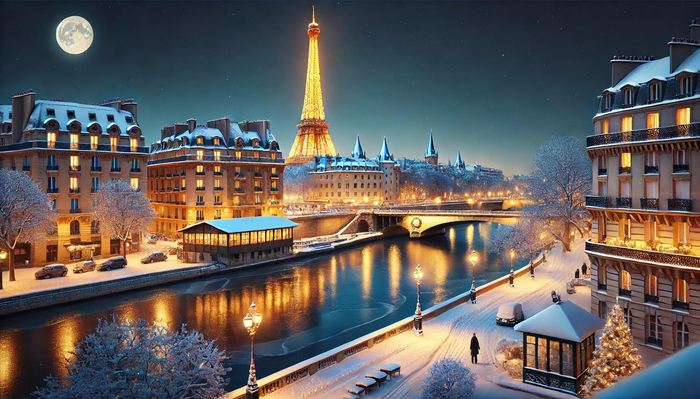

1.Eiffel Tower

The Eiffel Tower is one of the most recognizable structures in the world. Built in 1889, it offers stunning views of the city from its observation decks.
Paris, the city of lights and love, is renowned for its art, fashion, gastronomy, and culture. The Eiffel Tower, Notre-Dame Cathedral, and the Louvre Museum are just a few of the city's iconic landmarks.

The Eiffel Tower is one of the most recognizable structures in the world. Built in 1889, it offers stunning views of the city from its observation decks.

Notre-Dame Cathedral is a masterpiece of French Gothic architecture. It is famous for its intricate sculptures, stained glass windows, and its role in Victor Hugo's novel "The Hunchback of Notre-Dame".

The Louvre Museum is the world's largest art museum and a historic monument in Paris. It is home to thousands of works of art, including the Mona Lisa and the Venus de Milo.

La Sainte-Chapelle is a royal chapel located within the medieval Palais de la Cité, the residence of the Kings of France until the 14th century. It is renowned for its stunning stained glass windows, which depict over a thousand scenes from the Bible.

The Opéra Garnier, also known as the Palais Garnier, is a 1,979-seat opera house, which was built from 1861 to 1875 for the Paris Opera. It is known for its opulent architecture, including its grand staircase and stunning auditorium. The Opéra Garnier is also famous for being the setting of Gaston Leroux's novel "The Phantom of the Opera".